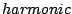
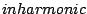

Figure 5.1 introduces a way of visualizing the spectrum of an audio signal. The spectrum describes, roughly speaking, how the signal's power is distributed into frequencies. (Much more precise definitions can be given than those that we'll develop here, but they would require more mathematical background.)
 |
Part (a) of the figure shows the spectrum of a
harmonic signal,
which is a periodic signal whose fundamental frequency is in the range of
perceptible pitches, roughly between 50 and 4000 Hertz.
The Fourier series (Page  ) gives a description of
a periodic signal as a sum of sinusoids. The frequencies of the sinusoids
are in the ratio . (The constant term in the Fourier series
may be thought of as a sinusoid,
) gives a description of
a periodic signal as a sum of sinusoids. The frequencies of the sinusoids
are in the ratio . (The constant term in the Fourier series
may be thought of as a sinusoid,
In a harmonic signal, the power shown in the spectrum is concentrated on a discrete subset of the frequency axis (a discrete set consists of isolated points, only finitely many in any bounded interval). We call this a discrete spectrum. Furthermore, the frequencies where the signal's power lies are in the ratio that arises from a periodic signal. (It's not necessary for all of the harmonic frequencies to be present; some harmonics may have zero amplitude.) For a harmonic signal, the graph of the spectrum shows the amplitudes of the partials of the signals. Knowing the amplitudes and phases of all the partials fully determines the original signal.
Part (b) of the figure shows a spectrum which is also discrete, so that the signal can again be considered as a sum of a series of partials. In this case, however, there is no fundamental frequency, i.e., no audible common submultiple of all the partials. This is called an inharmonic signal. (The terms  and  may be used to describe both the signals and their spectra.)
When dealing with discrete spectra, we report a partial's amplitude in a
slightly non-intuitive way. Each component sinusoid,
Part (c) of the figure shows a third possibility: the spectrum might not be concentrated into a discrete set of frequencies, but instead might be spread out among all possible frequencies. This can be called a continuous, or noisy spectrum. Spectra don't necessarily fall into either the discrete or continuous categories; real sounds, in particular, are usually somewhere in between.
Each of the three parts of the figure shows a continuous curve called the spectral envelope. In general, sounds don't have a single, well-defined spectral envelope; there may be many ways to draw a smooth-looking curve through a spectrum. On the other hand, a spectral envelope may be specified intentionally; in that case, it is usually clear how to make a spectrum conform to it. For a discrete spectrum, for example, we could simply read off, from the spectral envelope, the desired amplitude of each partial and make it so.
A sound's pitch can sometimes be inferred from its spectrum. For discrete spectra, the pitch is primarily encoded in the frequencies of the partials. Harmonic signals have a pitch determined by their fundamental frequency; for inharmonic ones, the pitch may be clear, ambiguous, or absent altogether, according to complex and incompletely understood rules. A noisy spectrum may also have a perceptible pitch if the spectral envelope contains one or more narrow peaks. In general, a sound's loudness and timbre depend more on its spectral envelope than on the frequencies in the spectrum, although the distinction between continuous and discrete spectra may also be heard as a difference in timbre.
Timbre, as well as pitch, may evolve over the life of a sound. We have been speaking of spectra here as static entities, not considering whether they change in time or not. If a signal's pitch and timbre are changing over time, we can think of the spectrum as a time-varying description of the signal's momentary behavior.
This way of viewing sounds is greatly oversimplified. The true behavior of audible pitch and timbre has many aspects which can't be explained in terms of this model. For instance, the timbral quality called ``roughness" is sometimes thought of as being reflected in rapid changes in the spectral envelope over time. The simplified description developed here is useful nonetheless in discussions about how to construct discrete or continuous spectra for a wide variety of musical purposes, as we will begin to show in the rest of this chapter.